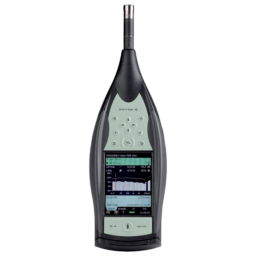
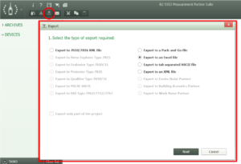
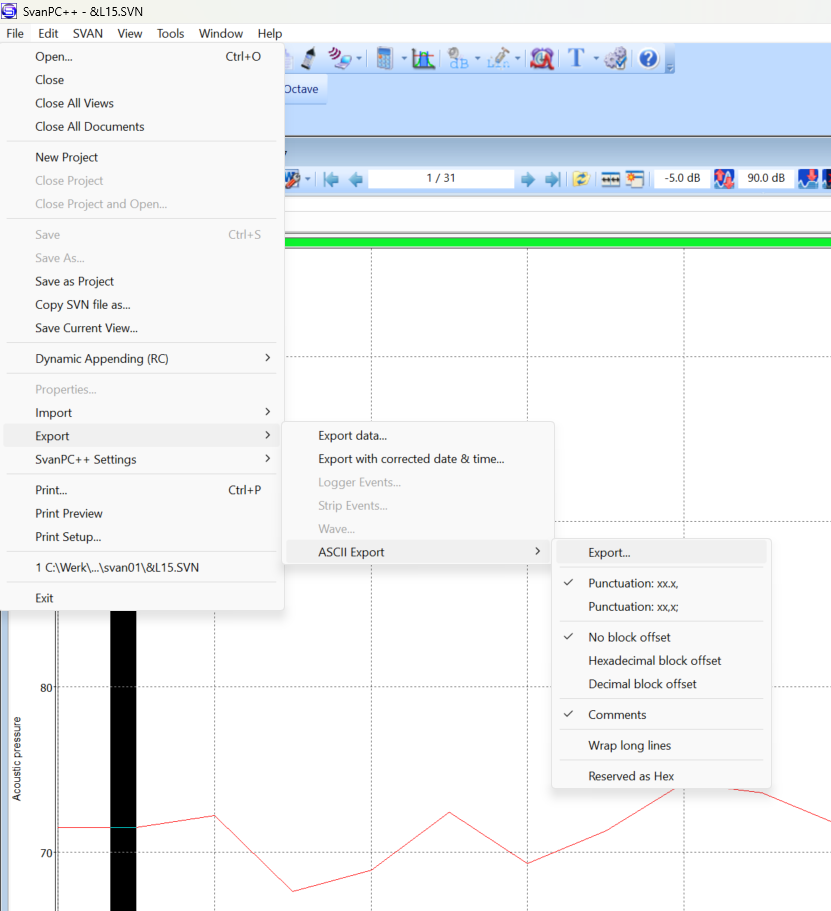
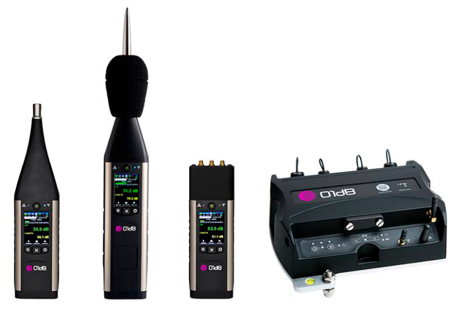
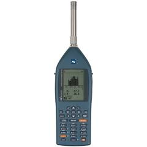
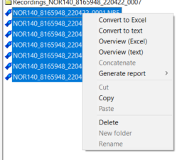
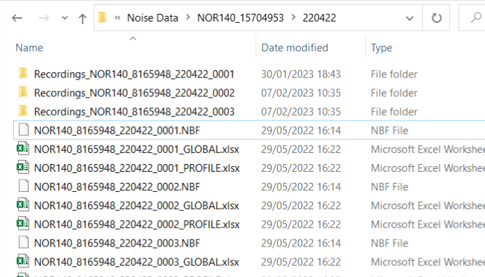

Bruel and kjaar 2250, 2270, 01db-fusion and svantek959 are supported
**Note:** under construction

Export from BZ5503
Choose ASCII export (.txt), tab-separated. You need the log-files of the broadband and the spectra (2 files) The optional wav-files are hidden in the folder structure of the B&K-project folder and you need to copy them separately.

Drag and drop the 2 log-files in the upload component.
The audio-files should not be dropped in the audio-upload section. The logfiles contain all the data to associate the audio with the logfiles.
General settings on SLM:
Menu - Measurement function: - 1/3 octave
Menu - Input - Measurement setup: start delay: 0s; integr. period: 1s; rep. cycles: inf; logger: ON
audio file settings: !!!PUT USB STICK IN SVAN 959!!! - Menu - Setup - USB-HOST PORT, Wave recording: PCM, 48 kHz, bits per sample 24
Export from SVANPC++
Choose file, export, export data, ASCII export with 'No block offset', with 'Comments' and without 'Wrap long lines' (.txt)

Drag and drop the log-file (.txt) in the upload component.
Drag and drop the svan000xx.wav file in the audio-upload section. (One wav-file per logfile)

General settings on SLM:
Make sure the option is selected that the (.csv) files are saved on the SD-card.
After the measurement: drop the .csv-datafile file in the datafiles section
Drag and drop the .mp3 file(s) in the audio-upload section.

General settings on SLM:
Only tested with files with spectral analysis and audio. No markers. To be continued.
Export from Norsonic NorXfer


Drop the profile.xlsx in the datafiles section
Drag and drop the .wav file(s) from the "recordings"-folder in the audio-upload section.